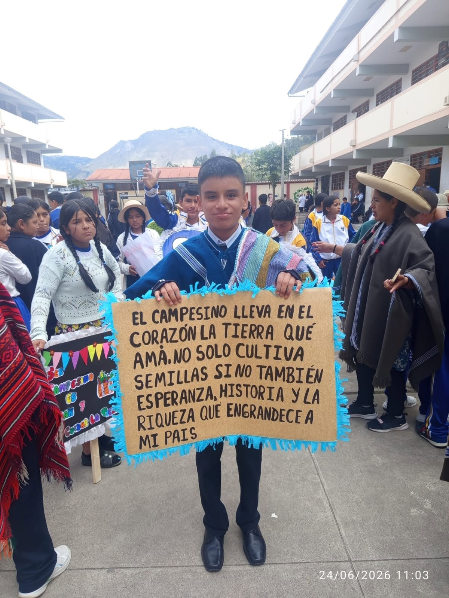
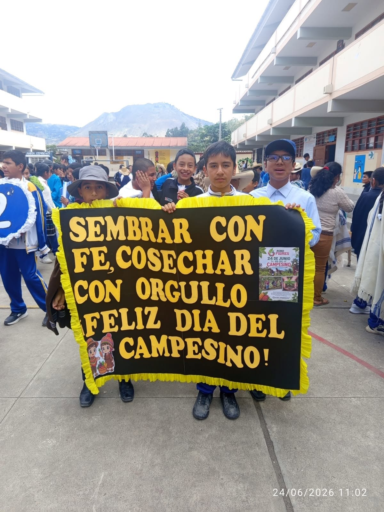
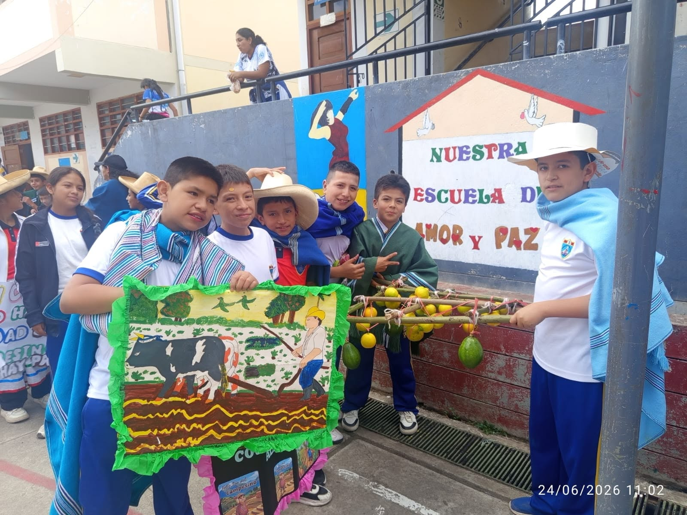
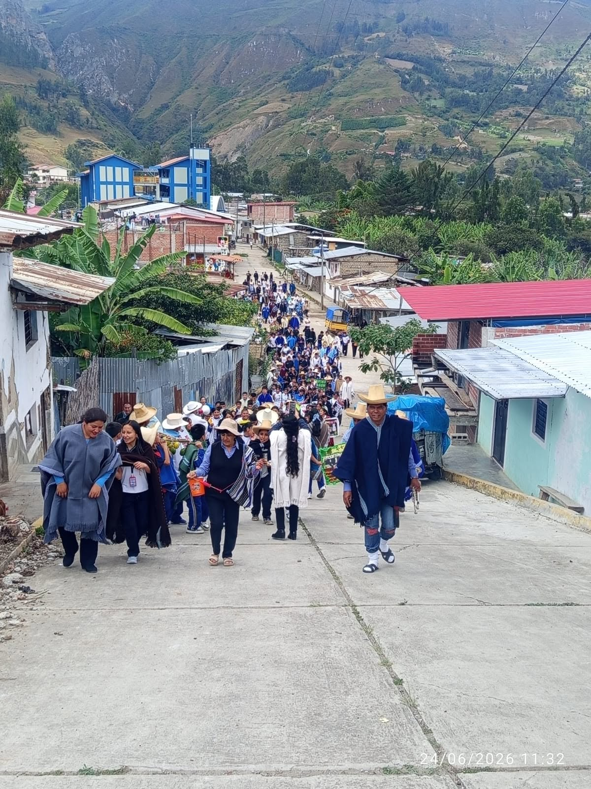
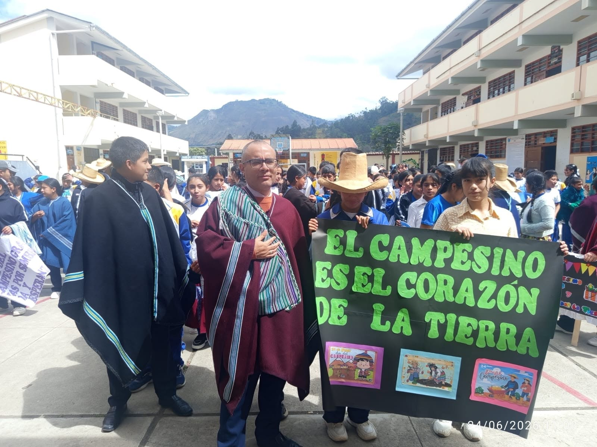
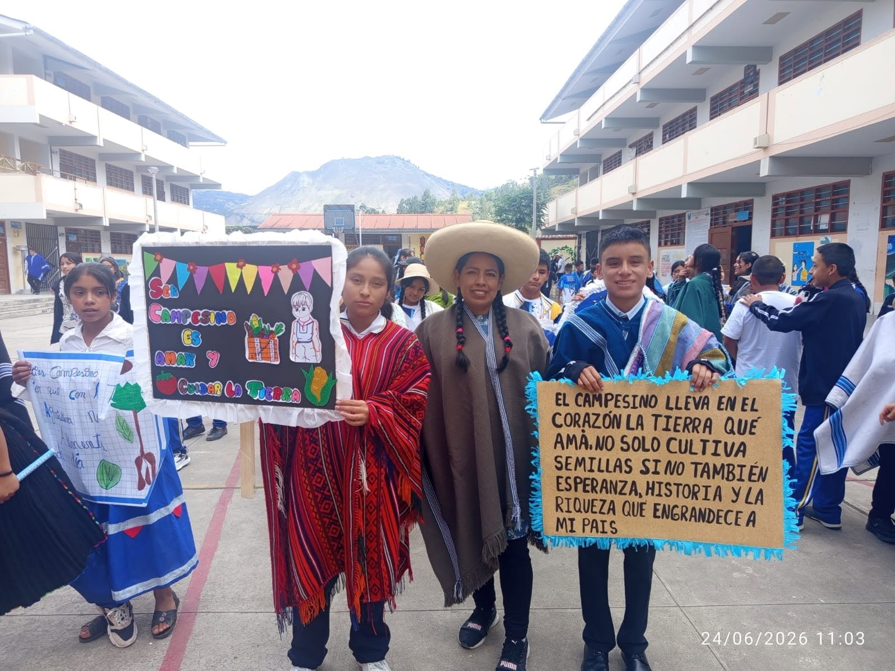

I.E. Virgen de la Asunción | Identidad, cultura y gratitud al campo
La Institución Educativa Virgen de la Asunción celebró con alegría y orgullo el Día del Campesino, una fecha significativa que permite reconocer el esfuerzo, la dedicación y el valor de los hombres y mujeres que trabajan la tierra. Esta actividad fortaleció en los estudiantes el respeto por la agricultura, las costumbres locales y la identidad cultural de nuestra comunidad.
Durante la celebración, los estudiantes participaron con carteles, vestimentas típicas, mensajes alusivos y representaciones relacionadas con la vida del campo. Esta participación permitió valorar el trabajo agrícola y comprender la importancia del campesino en el desarrollo de las familias y de la sociedad.
La actividad no solo fue una celebración, sino también una experiencia formativa. A través de ella, los estudiantes reflexionaron sobre el respeto a la tierra, la producción de alimentos, la conservación de las tradiciones y el reconocimiento de las raíces culturales que forman parte de nuestra identidad.
El propósito principal fue fortalecer la conciencia cultural y social de los estudiantes, promoviendo el agradecimiento hacia quienes cultivan la tierra con esfuerzo y responsabilidad. Asimismo, se buscó fomentar valores como la gratitud, la solidaridad, el respeto y el orgullo por nuestras tradiciones campesinas.





